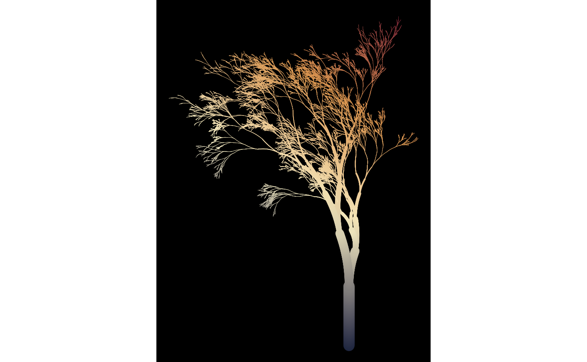
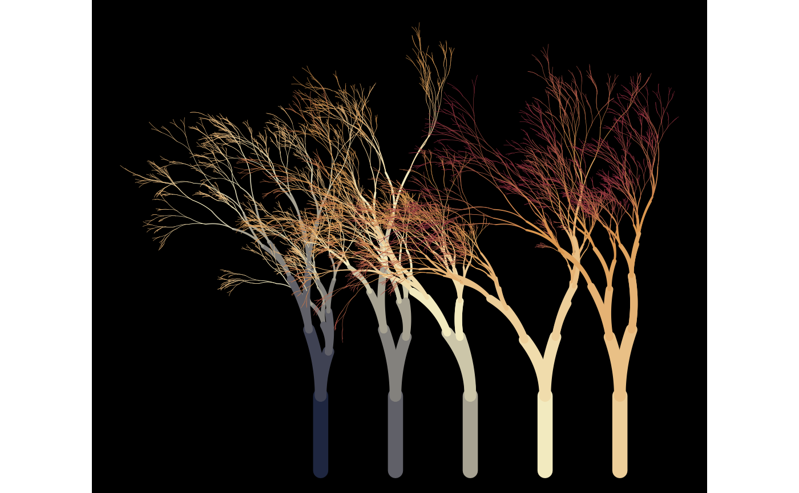
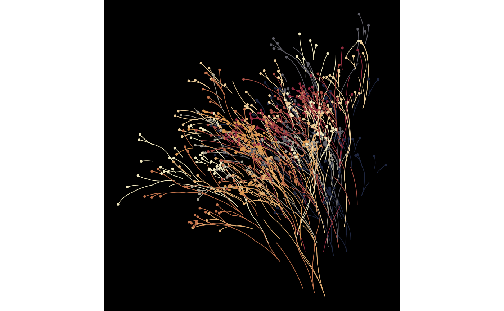
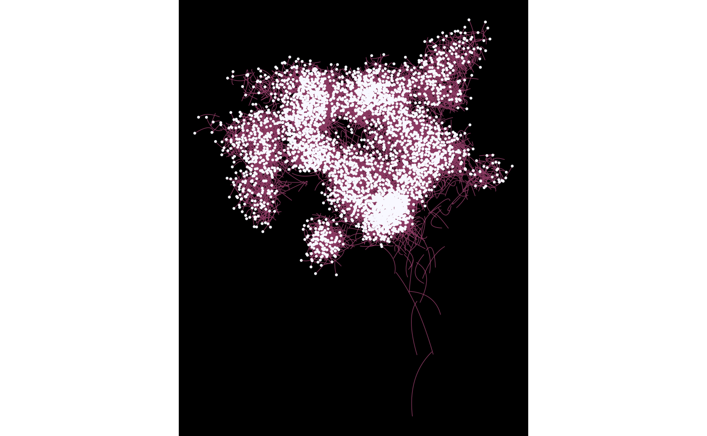

The growth of the flametree is partially governed by controller functions called “sparks”. A spark function takes four arguments (coord_x, coord_y, id_tree, and id_time) and outputs a numeric value. These functions can be specified manually and used as inputs to flametree_grow(), or can be generated using one of the built in generator functions. For instance, you can use the spark_linear() function to create a function that specifies any linear combination of the four inputs:
spark_linear(x = 2, y = 3)
#> function (coord_x, coord_y, id_tree, id_time)
#> {
#> (x * coord_x) + (y * coord_y) + (tree * id_tree) + (time *
#> id_time) + constant
#> }
#> <bytecode: 0x7f9500c76638>
#> <environment: 0x7f9500c75bf0>We could use this function to control how the colours in the tree change:
flametree_grow(
time = 12,
seg_col = spark_linear(x = 2, y = 3)
) %>%
flametree_plot()
Different parameter settings will produce different linear gradients. For example, we could have the colours change linearly across tree number and time, and have the horizontal spacing of the trees vary linearly with tree number:
flametree_grow(
trees = 5,
time = 10,
seg_col = spark_linear(time = 1, tree = 2),
shift_x = spark_linear(tree = 1)
) %>%
flametree_plot()
The previous examples all use spark_linear(), but flametree provides three other spark function generators. The spark_nothing() generator produces spark function that always returns zero, which is occasionally useful, wheras the spark_random() function injects uniform random noise. This can be useful with the “native flora” plot style:
flametree_grow(
trees = 10,
time = 7,
shift_x = spark_random(multiplier = 1),
shift_y = spark_random(multiplier = 1)
) %>%
flametree_plot(style = "nativeflora")
Defining your own spark function can be fun…
jittr <- function(coord_x, coord_y, id_tree, id_time) {
stats::runif(n = length(coord_x), min = -.2, max = .2)
}
flametree_grow(
time = 12,
seg_wid = spark_linear(constant = .2),
shift_x = jittr,
shift_y = jittr
) %>%
flametree_plot(
palette = c("hotpink4", "ghostwhite"),
style = "wisp"
)
…though the results can be peculiar!